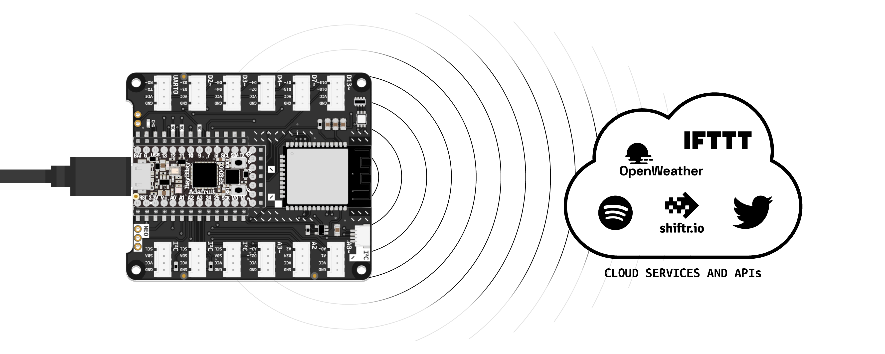

You can use your BitsyExpander to connect your ItsyBitsy microcontroller to most WiFi networks, such as your home network or your smartphone’s mobile hotspot.
This tutorial will guide you through connecting your ItsyBitsy microcontroller to a local WiFi network, retrieving a random joke from the internet using an API (Application Programming Interface), and displaying it on the Serial Monitor.
Connecting your microcontroller to eduroam is cumbersome due to strict security measures. If you are on campus, follow the steps provided later in this tutorial to connect your device to the internet using the TUD-facility network instead. This wifi is created for all kinds of small computers (eg. microcontrollers and raspberry pi’s). Security is enforced by allowing students to connect a small computer that is linked to their netid.